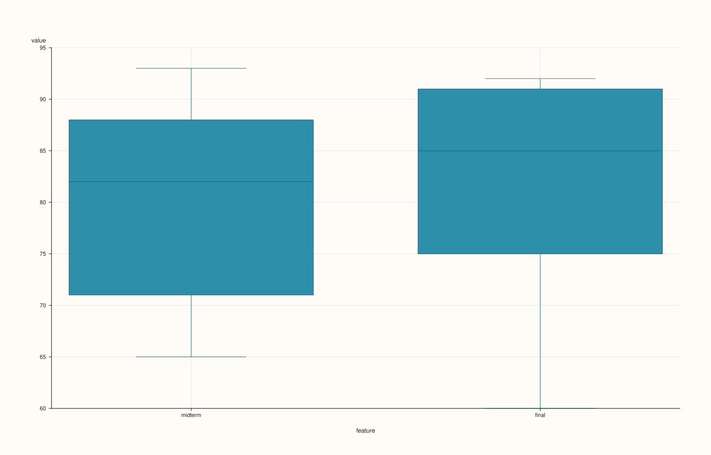

DataFramePlotAccessor::box¶
Back to DataFramePlotAccessor API Reference
Signatures¶
DataFramePlotAccessor::box(pluss::msharp::RangeView::Of<std::string_view> features = {}) const -> pluss::pl::Studio
DataFramePlotAccessor::box(pluss::msharp::RangeView::Of<std::string_view> features,
const BoxPlotOptions& options) const -> pluss::pl::Studio
DataFramePlotAccessor::box(std::initializer_list<std::string_view> features) const -> pluss::pl::Studio
DataFramePlotAccessor::box(std::initializer_list<std::string_view> features,
const BoxPlotOptions& options) const -> pluss::pl::Studio
What It Does¶
Draws a box-and-whisker distribution summary for each requested numeric feature, one box per feature, sharing a single pane with the feature names as x-axis tick labels — not one pane per feature. This is a pure distribution-summary method: there’s no x/y-feature concept here at all, just a set of numeric features to summarize.
Important
An empty features list means “every numeric feature in the frame”
Every distribution/multivariate method on this accessor that takes a features parameter
(box, violin, hist, density,
corr_heatmap, parallel,
andrews_curves, radviz) shares this rule: passing an
explicit, non-empty list validates each named feature is a numeric Series (throwing
"<method>: feature '<name>' is not a numeric Series" if not); passing the default empty
{} instead auto-selects every Series-kind feature in the frame, throwing
"<method>: no numeric Series features available" if the frame has none. See Example 1 for
the empty-list, “infer everything” form.
Note
Non-finite values are silently dropped per feature, not shown as gaps
Each feature’s values are filtered to only the finite (non-NaN, non-infinite) ones before
the box statistics are computed — an invalid or missing cell simply doesn’t contribute a
data point to its feature’s box, rather than appearing as a visible gap or NULL marker.
Parameters¶
features (RangeView<std::string_view> or std::initializer_list<std::string_view>,
default {})
Numeric features to summarize, each as its own box. Leave empty (the default) to use
every numeric feature in the frame. At least one feature (explicit or inferred) is
required — an entirely non-numeric frame throws "DataFrame::plot().box: at least one numeric feature is required" after the empty list resolves to nothing.
options (BoxPlotOptions)
cpp struct BoxPlotOptions { double alpha{0.95}; double line_width{1.1}; };
Returns¶
pluss::pl::Studio
A figure with one pane containing one box per requested (or inferred) feature, x-axis
ticks labeled with each feature’s name.
Examples¶
Example 1. No explicit features: every numeric feature in the frame is summarized.
using namespace pluss::table;
auto scores = DataFrame({
{"midterm", Slate(pluss::make_series({71.0, 82.0, 93.0, 65.0, 88.0}))},
{"final", Slate(pluss::make_series({75.0, 85.0, 91.0, 60.0, 92.0}))},
{"cohort", Slate(pluss::make_note({"Morning", "Evening", "Morning", "Evening", "Morning"}))},
});
auto chart = scores.plot().box();
chart.show();
box() with no arguments summarizes both midterm and final (the two Series-kind
features) as two side-by-side boxes; cohort (Note-kind) is silently excluded since it
isn’t numeric.

Example 2. An explicit feature subset, via initializer_list.
auto chart = scores.plot().box({"midterm", "final"});
chart.show();
Same result as Example 1 here, but written explicitly — useful when the frame has more numeric features than you want summarized together.

Example 3. The same explicit subset via a reusable RangeView.
std::vector<std::string_view> names{"midterm", "final"};
auto chart = scores.plot().box(pluss::msharp::RangeView::Of<std::string_view>(names));
chart.save_pdf("scores_box.pdf");

Example 4. An explicit BoxPlotOptions.
BoxPlotOptions box_options;
box_options.alpha = 0.8;
box_options.line_width = 1.6;
auto chart = scores.plot().box({"midterm", "final"}, box_options);
chart.show();
Example 5. A feature that isn’t numeric throws immediately.
try {
auto bad = scores.plot().box({"cohort"});
} catch (const std::exception& e) {
std::cout << e.what();
}
Output¶
DataFrame::plot().box: feature 'cohort' is not a numeric Series
Notes¶
An empty (default)
featureslist infers every numeric feature in the frame — see the important callout above.Non-finite values are dropped per feature before the box statistics are computed, rather than appearing as gaps.
Every feature shares one pane, positioned side by side by feature name — not a mosaic of separate panes (contrast
hist()’s multi-feature mosaic layout).Returns a
pluss::pl::Studio— seeline()’s important callout for how to view or save the result.
See Also¶
DataFramePlotAccessor::violin: full distribution shape instead of just quartiles and whiskers, including a value-vs-group overload this method doesn’t have.DataFramePlotAccessor::hist/density: other distribution-shape views.DataFramePlotAccessor::barwithci_enabled = true: mean-and-interval instead of full quartile summaries.